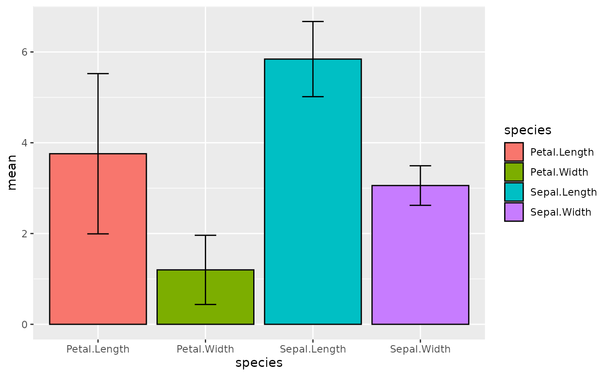

systemPipe: Workflow and Visualization Toolkit
Last update: 03 August, 2021
systemPipeWorkshop2021.RmdAuthors: Daniela Cassol (danielac@ucr.edu), Le Zhang (le.zhang001@email.ucr.edu), Thomas Girke (thomas.girke@ucr.edu).
Institution: Institute for Integrative Genome Biology, University of California, Riverside, California, USA.
Overview
Workshop Description
This workshop introduces systemPipe (SP), a generic toolkit for designing and running reproducible data analysis workflows. The environment consists of three major modules implemented as R/Bioconductor packages. systemPipeR (SPR) provides core functionalities for defining workflows, interacting with command-line software, and executing both R and/or command-line software, as well as generating publication-quality analysis reports. systemPipeShiny (SPS) integrates a graphical user interface for managing workflows and visualizing results interactively. systemPipeWorkflow (SPW) offers a collection of pre-configured workflow templates. This hands-on event will include the following topics: (1) brief overview of the design principles and functionalities of the SP toolkit; (2) design and usage of SPR’s command-line interface based on an object-oriented R implementation of CWL; (3) configuration and execution of workflows; (4) construction of custom workflows; (5) configuration and execution of a pre-configured workflow example from start to finish, e.g. RNA-Seq template; (6) parallel execution of workflows on HPC and cloud systems with and without schedulers; (7) generation of technical and scientific analysis reports including visualization; and (8) demonstration of SPS’ core functionalities, the project’s Shiny App.
Pre-requisites
- Basic knowledge of R and usage of Bioconductor packages for NGS analysis
- Basic knowledge of running command-line software
- Basic knowledge of parallelization concepts
Non-essential background reading:
Workshop Participation
Participants will be able to perform all analysis components of this workshop hands-on. Active user participation throughout the event is highly encouraged, including but not limited to lecture material, hands-on sections, and final discussion about package improvements. Participants are encouraged to ask questions preferentially at the end of the workshop.
Time outline
1h 45m total
| Activity | Time |
|---|---|
| Overview of systemPipe toolkit | 10m |
| Introduction to SPR’s command-line interface | 20m |
| Configuration and execution of workflows | 20m |
| Showcase RNA-Seq workflow | 20m |
| Parallelization on single machines and clusters | 10m |
| Generation of technical and scientific analysis reports | 5m |
| Overview of systemPipeShiny core functionalities | 20m |
Workshop goals and objectives
Learning goals
- Recognize the benefits of a generic R-based workflow construction environment that is both scalable and reproducible
- Integration of command-line tools via the CWL community standard
- Rendering of R markdown reports and critical assessment of scientific analysis reports
- Parallelization of big data analysis tasks
Learning objectives
- Identify and practice how to make analysis workflows more robust, reproducible, and portable across heterogeneous computing systems
- Usage of new workflow control class for designing, configuring, and running workflows
- Optimize and debug workflows
- Inspection of technical reports and log files
- Design of new and fully customized workflows
- Practice interactive workflow management and visualization
Workshop
Running the Workshop
This workshop uses R 4.1.0 and Bioconductor version3.14. Bioconductor can be installed following these instructions.
During the Bioc2021 conference, the workshop can be run in the cloud.
Workshop setup with Docker
The Docker container used by this workshop runs with Bioconductor’s development version 3.14. I includes all the necessary packages and software for running the code of in the workshop vignettes. To use the Docker container, one needs to first install Docker on a user’s system.
- The container can be downloaded and run with:
docker run -e PASSWORD=systempipe -p 8787:8787 systempipe/systempipeworkshop2021:latestLog in to RStudio at http://localhost:8787 using username
rstudioand passwordsystempipe.If you prefer to run the workshop from the command-line:
docker run -it --user rstudio systempipe/systempipeworkshop2021:latest bash Workshop setup with GitHub
systemPipeR and systemPipeShiny environment can be installed from the R console using the BiocManager::install command. The associated data package systemPipeRdata can be installed the same way. The latter is a helper package for generating systemPipeR workflow environments with a single command containing all parameter files and sample data required to quickly test and run workflows.
You can install locally the necessary packages for this workshop as follows:
## Install workshop package
BiocManager::install("systemPipeR/systemPipeWorkshop2021")
## Install required packages
BiocManager::install(c("systemPipeR", "systemPipeRdata", "systemPipeShiny"), version="3.14")To access the vignette:
browseVignettes(package = "systemPipeWorkshop2021")Getting Started
Loading package and documentation
library("systemPipeR")
#> Loading required package: Rsamtools
#> Loading required package: GenomeInfoDb
#> Loading required package: BiocGenerics
#>
#> Attaching package: 'BiocGenerics'
#> The following objects are masked from 'package:stats':
#>
#> IQR, mad, sd, var, xtabs
#> The following objects are masked from 'package:base':
#>
#> anyDuplicated, append, as.data.frame, basename, cbind, colnames,
#> dirname, do.call, duplicated, eval, evalq, Filter, Find, get, grep,
#> grepl, intersect, is.unsorted, lapply, Map, mapply, match, mget,
#> order, paste, pmax, pmax.int, pmin, pmin.int, Position, rank,
#> rbind, Reduce, rownames, sapply, setdiff, sort, table, tapply,
#> union, unique, unsplit, which.max, which.min
#> Loading required package: S4Vectors
#> Loading required package: stats4
#>
#> Attaching package: 'S4Vectors'
#> The following objects are masked from 'package:base':
#>
#> expand.grid, I, unname
#> Loading required package: IRanges
#> Loading required package: GenomicRanges
#> Loading required package: Biostrings
#> Loading required package: XVector
#>
#> Attaching package: 'Biostrings'
#> The following object is masked from 'package:base':
#>
#> strsplit
#> Loading required package: ShortRead
#> Loading required package: BiocParallel
#> Loading required package: GenomicAlignments
#> Loading required package: SummarizedExperiment
#> Loading required package: MatrixGenerics
#> Loading required package: matrixStats
#>
#> Attaching package: 'MatrixGenerics'
#> The following objects are masked from 'package:matrixStats':
#>
#> colAlls, colAnyNAs, colAnys, colAvgsPerRowSet, colCollapse,
#> colCounts, colCummaxs, colCummins, colCumprods, colCumsums,
#> colDiffs, colIQRDiffs, colIQRs, colLogSumExps, colMadDiffs,
#> colMads, colMaxs, colMeans2, colMedians, colMins, colOrderStats,
#> colProds, colQuantiles, colRanges, colRanks, colSdDiffs, colSds,
#> colSums2, colTabulates, colVarDiffs, colVars, colWeightedMads,
#> colWeightedMeans, colWeightedMedians, colWeightedSds,
#> colWeightedVars, rowAlls, rowAnyNAs, rowAnys, rowAvgsPerColSet,
#> rowCollapse, rowCounts, rowCummaxs, rowCummins, rowCumprods,
#> rowCumsums, rowDiffs, rowIQRDiffs, rowIQRs, rowLogSumExps,
#> rowMadDiffs, rowMads, rowMaxs, rowMeans2, rowMedians, rowMins,
#> rowOrderStats, rowProds, rowQuantiles, rowRanges, rowRanks,
#> rowSdDiffs, rowSds, rowSums2, rowTabulates, rowVarDiffs, rowVars,
#> rowWeightedMads, rowWeightedMeans, rowWeightedMedians,
#> rowWeightedSds, rowWeightedVars
#> Loading required package: Biobase
#> Welcome to Bioconductor
#>
#> Vignettes contain introductory material; view with
#> 'browseVignettes()'. To cite Bioconductor, see
#> 'citation("Biobase")', and for packages 'citation("pkgname")'.
#>
#> Attaching package: 'Biobase'
#> The following object is masked from 'package:MatrixGenerics':
#>
#> rowMedians
#> The following objects are masked from 'package:matrixStats':
#>
#> anyMissing, rowMedians
#>
#>
#> Attaching package: 'systemPipeR'
#> The following object is masked from 'package:BiocStyle':
#>
#> output
library("systemPipeShiny")
#> Loading required package: shiny
#>
#> Attaching package: 'shiny'
#> The following object is masked from 'package:BiocStyle':
#>
#> markdown
#> Loading required package: spsUtil
#> Loading required package: spsComps
#> Loading required package: drawer
library("systemPipeRdata") - Documentation
Set working directory
setwd("vignettes")How to get help for systemPipeR/systemPipeShiny
All questions about the package or any particular function should be posted to the Bioconductor support site https://support.bioconductor.org.
Please add the “systemPipeR” tag to your question, and the package authors will automatically receive an alert.
We appreciate receiving reports of bugs in the functions or documentation and suggestions for improvement. For that, please consider opening an issue at GitHub.
Overview of systemPipe toolkit
systemPipe (SP) is a generic toolkit for designing and running reproducible data analysis workflows. The environment consists of three major modules implemented as R/Bioconductor packages:
systemPipeR(SPR) provides core functionalities for defining workflows, interacting with command-line software, and executing both R and/or command-line software, as well as generating publication-quality analysis reports.systemPipeShiny(SPS) integrates a graphical user interface for managing workflows and visualizing results interactively.systemPipeWorkflow(SPW) offers a collection of pre-configured workflow templates.
Introduction to SPR’s command-line interface
A central concept for designing workflows within the systemPipeR environment is the use of workflow management containers. systemPipeR adopted the widely used community standard Common Workflow Language (CWL) (Amstutz et al. 2016) for describing analysis workflows in a generic and reproducible manner. Using this community standard in systemPipeR has many advantages. For instance, the integration of CWL allows running systemPipeR workflows from a single specification instance either entirely from within R, from various command line wrappers (e.g., cwl-runner) or from other languages (, e.g., Bash or Python). systemPipeR includes support for both command line and R/Bioconductor software as well as resources for containerization, parallel evaluations on computer clusters along with the automated generation of interactive analysis reports.
An important feature of systemPipeR's CWL interface is that it provides two options to run command line tools and workflows based on CWL. First, one can run CWL in its native way via an R-based wrapper utility for cwl-runner or cwl-tools (CWL-based approach). Second, one can run workflows using CWL’s command line and workflow instructions from within R (R-based approach). In the latter case the same CWL workflow definition files (e.g. .cwl and .yml) are used but rendered and executed entirely with R functions defined by systemPipeR, and thus use CWL mainly as a command line and workflow definition format rather than software to run workflows. In this regard systemPipeR also provides several convenience functions that are useful for designing and debugging workflows, such as a command line rendering function to retrieve the exact command line strings for each data set and processing step prior to running a command line.
Configuration and execution of workflows
Load sample data and directory structure
systemPipeRdata::genWorkenvir("new", mydirname = "bioc2021")
#> [1] "Generated bioc2021 directory. Next run in new directory, the R code from *.Rmd template interactively. Alternatively, workflows can be exectued with a single command as instructed in the vignette."Project structure
systemPipeR expects a project directory structure that consists of a directory where users may store all the raw data, the results directory that will be reserved for all the outfiles files or new output folders, and the parameters directory.
This structure allows reproducibility and collaboration across the data science team since internally relative paths are used. Users could transfer this project to a different location and still be able to run the entire workflow. Also, it increases efficiency and data management once the raw data is kept in a separate folder and avoids duplication.
Directory Structure
systemPipeRdata, helper package, provides pre-configured workflows, reporting templates, and sample data loaded as demonstrated below. With a single command, the package allows creating the workflow environment containing the structure described here (see Figure @ref(fig:dir)).
Directory names are indicated in green. Users can change this structure as needed, but need to adjust the code in their workflows accordingly.
-
workflow/ (e.g. myproject/)
- This is the root directory of the R session running the workflow.
- Run script ( *.Rmd) and sample annotation (targets.txt) files are located here.
- Note, this directory can have any name (e.g. myproject). Changing its name does not require any modifications in the run script(s).
-
Important subdirectories:
-
param/
-
param/cwl/: This subdirectory stores all the parameter and configuration files. To organize workflows, each can have its own subdirectory, where all
*.cwland*input.ymlfiles need to be in the same subdirectory.
-
param/cwl/: This subdirectory stores all the parameter and configuration files. To organize workflows, each can have its own subdirectory, where all
-
data/
- Raw data (e.g. FASTQ files)
- FASTA file of reference (e.g. reference genome)
- Annotation files
- Metadata
- etc.
-
results/
- Analysis results are usually written to this directory, including: alignment, variant and peak files (BAM, VCF, BED); tabular result files; and image/plot files
- Note, the user has the option to organize results files for a given sample and analysis step in a separate subdirectory.
-
param/

systemPipeR’s preconfigured directory structure.
Structure of initial targets file
The targets file defines all input files (e.g. FASTQ, BAM, BCF) and sample comparisons of an analysis workflow. The following shows the format of a sample targets file included in the package. It also can be viewed and downloaded from systemPipeR’s GitHub repository here. In a target file with a single type of input files, here FASTQ files of single-end (SE) reads, the first column describe the path and the second column represents a unique id name for each sample. The third column called Factor represents the biological replicates. All subsequent columns are additional information, and any number of extra columns can be added as needed.
Users should note here, the usage of targets files is optional when using systemPipeR's new workflow management interface. They can be replaced by a standard YAML input file used by CWL. Since for organizing experimental variables targets files are extremely useful and user-friendly. Thus, we encourage users to keep using them.
- Structure of
targetsfile for single-end (SE) samples
targetspath <- "targets.txt"
showDF(read.delim(targetspath, comment.char = "#"))To work with custom data, users need to generate a targets file containing the paths to their own FASTQ files and then provide under targetspath the path to the corresponding targets file.
- Structure of
targetsfile for “Hello World” example
In this example, targets file presents only two columns, which the first one are the different phrases used by the echo command-line and the second column it is the sample id. The id column is required, and each sample id should be unique.
targetspath <- system.file("extdata/cwl/example/targets_example.txt", package = "systemPipeR")
showDF(read.delim(targetspath, comment.char = "#"))Structure of the new parameters files
The parameters and configuration required for running command-line software are provided by the widely used community standard Common Workflow Language (CWL) (Amstutz et al. 2016), which describes parameters analysis workflows in a generic and reproducible manner. For R-based workflow steps, param files are not required. For a complete overview of the CWL syntax, please see the section below. Also, we have a dedicated section explain how to systemPipeR establish the connection between the CWL parameters files and the targets files. Please see here.
Automate creation of CWL parameters
Users need to define the command-line in a pseudo-bash script format:
# "hisat2 -S ./results/M1A.sam -x ./data/tair10.fasta -k 1 -threads 4 -U ./data/SRR446027_1.fastq.gz "
command <- "
hisat2 \
-S <F, out: ./results/M1A.sam> \
-x <F: ./data/tair10.fasta> \
-k <int: 1> \
-threads <int: 4> \
-U <F: ./data/SRR446027_1.fastq.gz>
"Define prefix and defaults
First line is the base command. Each line is an argument with its default value.
For argument lines (starting from the second line), any word before the first space with leading
-or--in each will be treated as a prefix, like-Sor--min. Any line without this first word will be treated as no prefix.All defaults are placed inside
<...>.First argument is the input argument type.
Ffor “File,” “int,” “string” are unchanged.Optional: use the keyword
outfollowed the type with a,comma separation to indicate if this argument is also an CWL output.Then, use
:to separate keywords and default values, any non-space value after the:will be treated as the default value.If any argument has no default value, just a flag, like
--verbose, there is no need to add any<...>
createParam Function
createParam function requires the string as defined above as an input.
First of all, the function will print the three components of the cwl file: - BaseCommand: Specifies the program to execute. - Inputs: Defines the input parameters of the process. - Outputs: Defines the parameters representing the output of the process.
The four component is the original command-line.
If in interactive mode, the function will verify that everything is correct and will ask you to proceed. Here, the user can answer “no” and provide more information at the string level. Another question is to save the param created here.
If running the workflow in non-interactive mode, the createParam function will consider “yes” and returning the container.
cmd <- createParam(command, writeParamFiles = TRUE)
#> *****BaseCommand*****
#> hisat2
#> *****Inputs*****
#> S:
#> type: File
#> preF: -S
#> yml: ./results/M1A.sam
#> x:
#> type: File
#> preF: -x
#> yml: ./data/tair10.fasta
#> k:
#> type: int
#> preF: -k
#> yml: 1
#> threads:
#> type: int
#> preF: -threads
#> yml: 4
#> U:
#> type: File
#> preF: -U
#> yml: ./data/SRR446027_1.fastq.gz
#> *****Outputs*****
#> output1:
#> type: File
#> value: ./results/M1A.sam
#> *****Parsed raw command line*****
#> hisat2 -S ./results/M1A.sam -x ./data/tair10.fasta -k 1 -threads 4 -U ./data/SRR446027_1.fastq.gz
#> Written content of 'commandLine' to file:
#> param/cwl/hisat2/hisat2.cwl
#> Written content of 'commandLine' to file:
#> param/cwl/hisat2/hisat2.yml
Project initialization
To create a Workflow within systemPipeR, we can start by defining an empty container and checking the directory structure:
sal <- SPRproject(projPath = getwd())
#> Creating directory '/__w/systemPipeWorkshop2021/systemPipeWorkshop2021/vignettes/bioc2021/.SPRproject'
#> Creating file '/__w/systemPipeWorkshop2021/systemPipeWorkshop2021/vignettes/bioc2021/.SPRproject/SYSargsList.yml'Internally, SPRproject function will create a hidden folder called .SPRproject, by default, to store all the log files. A YAML file, here called SYSargsList.yml, has been created, which initially contains the basic location of the project structure; however, every time the workflow object sal is updated in R, the new information will also be store in this flat-file database for easy recovery. If you desire different names for the logs folder and the YAML file, these can be modified as follows:
sal <- SPRproject(logs.dir= ".SPRproject", sys.file=".SPRproject/SYSargsList.yml") Also, this function will check and/or create the basic folder structure if missing, which means data, param, and results folder, as described here. If the user wants to use a different names for these directories, can be specified as follows:
sal <- SPRproject(data = "data", param = "param", results = "results") It is possible to separate all the R objects created within the workflow analysis from the current environment. SPRproject function provides the option to create a new environment, and in this way, it is not overwriting any object you may want to have at your current section.
sal <- SPRproject(envir = new.env()) In this stage, the object sal is a empty container, except for the project information. The project information can be accessed by the projectInfo method:
sal
#> Instance of 'SYSargsList':
#> No workflow steps added
projectInfo(sal)
#> $project
#> [1] "/__w/systemPipeWorkshop2021/systemPipeWorkshop2021/vignettes/bioc2021"
#>
#> $data
#> [1] "data"
#>
#> $param
#> [1] "param"
#>
#> $results
#> [1] "results"
#>
#> $logsDir
#> [1] ".SPRproject"
#>
#> $sysargslist
#> [1] ".SPRproject/SYSargsList.yml"Also, the length function will return how many steps this workflow contains and in this case it is empty, as follow:
length(sal)
#> [1] 0Workflow Design
systemPipeR workflows can be designed and built from start to finish with a single command, importing from an R Markdown file or stepwise in interactive mode from the R console. In the next section, we will demonstrate how to build the workflow in an interactive mode, and in the following section, we will show how to build from a file.
New workflows are constructed, or existing ones modified, by connecting each step via appendStep method. Each SYSargsList instance contains instructions needed for processing a set of input files with a specific command-line or R software, as well as the paths to the corresponding outfiles generated by a particular tool/step.
To build R code based step, the constructor function Linewise is used. For more details about this S4 class container, see here.
Build workflow interactive
This tutorial shows a very simple example for describing and explaining all main features available within systemPipeR to design, build, manage, run, and visualize the workflow. In summary, we are exporting a dataset to multiple files, compressing and decompressing each one of the files, and importing to R, and finally performing a statistical analysis.
In the previous section, we initialize the project by building the sal object. Until this moment, the container has no steps:
sal
#> Instance of 'SYSargsList':
#> No workflow steps addedNext, we need to populate the object created with the first step in the workflow.
Adding the first step
The first step is R code based, and we are splitting the iris dataset by Species and for each Species will be saved on file. Please note that this code will not be executed now; it is just store in the container for further execution.
This constructor function requires the step_name and the R-based code under the code argument. The R code should be enclosed by braces ({}) and separated by a new line.
appendStep(sal) <- LineWise(code = {
mapply(function(x, y) write.csv(x, y),
split(iris, factor(iris$Species)),
file.path("results", paste0(names(split(iris, factor(iris$Species))), ".csv"))
)
},
step_name = "export_iris")For a brief overview of the workflow, we can check the object as follows:
sal
#> Instance of 'SYSargsList':
#> WF Steps:
#> 1. export_iris --> Status: Pending
#> Also, for printing and double-check the R code in the step, we can use the codeLine method:
codeLine(sal)
#> export_iris
#> mapply(function(x, y) write.csv(x, y), split(iris, factor(iris$Species)), file.path("results", paste0(names(split(iris, factor(iris$Species))), ".csv")))Adding more steps
Next, an example of how to compress the exported files using gzip command-line.
The constructor function creates an SYSargsList S4 class object using data from three input files:
- CWL command-line specification file (`wf_file` argument);
- Input variables (`input_file` argument);
- Targets file (`targets` argument).In CWL, files with the extension .cwl define the parameters of a chosen command-line step or workflow, while files with the extension .yml define the input variables of command-line steps.
The targets file is optional for workflow steps lacking input files. The connection between input variables and the targets file is defined under the inputvars argument. It is required a named vector, where each element name needs to match with column names in the targets file, and the value must match the names of the input variables defined in the *.yml files (see Figure @ref(fig:sprCWL)).
A detailed description of the dynamic between input variables and targets files can be found here. In addition, the CWL syntax overview can be found here.
Besides all the data form targets, wf_file, input_file and dir_path arguments, SYSargsList constructor function options include:
-
step_name: a unique name for the step. This is not mandatory; however, it is highly recommended. If no name is provided, a defaultstep_x, wherexreflects the step index, will be added. -
dir: this option allows creating an exclusive subdirectory for the step in the workflow. All the outfiles and log files for this particular step will be generated in the respective folders. -
dependency: after the first step, all the additional steps appended to the workflow require the information of the dependency tree.
The appendStep<- method is used to append a new step in the workflow.
targetspath <- system.file("extdata/cwl/gunzip", "targets_gunzip.txt", package = "systemPipeR")
appendStep(sal) <- SYSargsList(step_name = "gzip",
targets = targetspath, dir = TRUE,
wf_file = "gunzip/workflow_gzip.cwl", input_file = "gunzip/gzip.yml",
dir_path = system.file("extdata/cwl", package = "systemPipeR"),
inputvars = c(FileName = "_FILE_PATH_", SampleName = "_SampleName_"),
dependency = "export_iris")Note: This will not work if the gzip is not available on your system (installed and exported to PATH) and may only work on Windows systems using PowerShell.
For a overview of the workflow, we can check the object as follows:
sal
#> Instance of 'SYSargsList':
#> WF Steps:
#> 1. export_iris --> Status: Pending
#> 2. gzip --> Status: Pending
#> Total Files: 3 | Existing: 0 | Missing: 3
#> 2.1. gzip
#> cmdlist: 3 | Pending: 3
#> Note that we have two steps, and it is expected three files from the second step. Also, the workflow status is Pending, which means the workflow object is rendered in R; however, we did not execute the workflow yet. In addition to this summary, it can be observed this step has three command lines.
For more details about the command-line rendered for each target file, it can be checked as follows:
cmdlist(sal, step="gzip")
#> $gzip
#> $gzip$SE
#> $gzip$SE$gzip
#> [1] "gzip -c results/setosa.csv > results/SE.csv.gz"
#>
#>
#> $gzip$VE
#> $gzip$VE$gzip
#> [1] "gzip -c results/versicolor.csv > results/VE.csv.gz"
#>
#>
#> $gzip$VI
#> $gzip$VI$gzip
#> [1] "gzip -c results/virginica.csv > results/VI.csv.gz"
Using the outfiles for the next step
For building this step, all the previous procedures are being used to append the next step. However, here, we can observe power features that build the connectivity between steps in the workflow.
In this example, we would like to use the outfiles from gzip Step, as input from the next step, which is the gunzip. In this case, let’s look at the outfiles from the first step:
outfiles(sal)
#> $export_iris
#> DataFrame with 0 rows and 0 columns
#>
#> $gzip
#> DataFrame with 3 rows and 1 column
#> gzip_file
#> <character>
#> 1 results/SE.csv.gz
#> 2 results/VE.csv.gz
#> 3 results/VI.csv.gzThe column we want to use is “gzip_file.” For the argument targets in the SYSargsList function, it should provide the name of the correspondent step in the Workflow and which outfiles you would like to be incorporated in the next step. The argument inputvars allows the connectivity between outfiles and the new targets file. Here, the name of the previous outfiles should be provided it. Please note that all outfiles column names must be unique.
It is possible to keep all the original columns from the targets files or remove some columns for a clean targets file. The argument rm_targets_col provides this flexibility, where it is possible to specify the names of the columns that should be removed. If no names are passing here, the new columns will be appended.
appendStep(sal) <- SYSargsList(step_name = "gunzip",
targets = "gzip", dir = TRUE,
wf_file = "gunzip/workflow_gunzip.cwl", input_file = "gunzip/gunzip.yml",
dir_path = system.file("extdata/cwl", package = "systemPipeR"),
inputvars = c(gzip_file = "_FILE_PATH_", SampleName = "_SampleName_"),
rm_targets_col = "FileName",
dependency = "gzip")We can check the targets automatically create for this step, based on the previous outfiles:
targetsWF(sal[3])
#> $gunzip
#> DataFrame with 3 rows and 2 columns
#> gzip_file SampleName
#> <character> <character>
#> 1 results/SE.csv.gz SE
#> 2 results/VE.csv.gz VE
#> 3 results/VI.csv.gz VIWe can also check all the expected outfiles for this particular step, as follows:
outfiles(sal[3])
#> $gunzip
#> DataFrame with 3 rows and 1 column
#> gunzip_file
#> <character>
#> 1 results/SE.csv
#> 2 results/VE.csv
#> 3 results/VI.csvNow, we can observe that the third step has been added and contains one substep.
sal
#> Instance of 'SYSargsList':
#> WF Steps:
#> 1. export_iris --> Status: Pending
#> 2. gzip --> Status: Pending
#> Total Files: 3 | Existing: 0 | Missing: 3
#> 2.1. gzip
#> cmdlist: 3 | Pending: 3
#> 3. gunzip --> Status: Pending
#> Total Files: 3 | Existing: 0 | Missing: 3
#> 3.1. gunzip
#> cmdlist: 3 | Pending: 3
#> In addition, we can access all the command lines for each one of the substeps.
cmdlist(sal["gzip"], targets = 1)
#> $gzip
#> $gzip$SE
#> $gzip$SE$gzip
#> [1] "gzip -c results/setosa.csv > results/SE.csv.gz"Getting data from a workflow instance
The final step in this simple workflow is an R code step. For that, we are using the LineWise constructor function as demonstrated above.
One interesting feature showed here is the getColumn method that allows extracting the information for a workflow instance. Those files can be used in an R code, as demonstrated below.
getColumn(sal, step = "gunzip", 'outfiles')
#> SE VE VI
#> "results/SE.csv" "results/VE.csv" "results/VI.csv"
appendStep(sal) <- LineWise(code = {
df <- lapply(getColumn(sal, step = "gunzip", 'outfiles'), function(x) read.delim(x, sep = ",")[-1])
df <- do.call(rbind, df)
stats <- data.frame(cbind(mean = apply(df[,1:4], 2, mean), sd = apply(df[,1:4], 2, sd)))
stats$species <- rownames(stats)
plot <- ggplot2::ggplot(stats, ggplot2::aes(x = species, y = mean, fill = species)) +
ggplot2::geom_bar(stat = "identity", color = "black", position = ggplot2::position_dodge()) +
ggplot2::geom_errorbar(ggplot2::aes(ymin = mean-sd, ymax = mean+sd), width = .2, position = ggplot2::position_dodge(.9))
},
step_name = "iris_stats",
dependency = "gzip")Build workflow from a {R Markdown}
The precisely same workflow can be created by importing the steps from an R Markdown file. As demonstrated above, it is required to initialize the project with SPRproject function.
importWF function will scan and import all the R chunk from the R Markdown file and build all the workflow instances. Then, each R chuck in the file will be converted in a workflow step.
sal_rmd <- SPRproject(logs.dir = ".SPRproject_rmd")
#> Creating directory '/__w/systemPipeWorkshop2021/systemPipeWorkshop2021/vignettes/bioc2021/.SPRproject_rmd'
#> Creating file '/__w/systemPipeWorkshop2021/systemPipeWorkshop2021/vignettes/bioc2021/.SPRproject_rmd/SYSargsList.yml'
sal_rmd <- importWF(sal_rmd,
file_path = system.file("extdata", "spr_simple_wf.Rmd", package = "systemPipeR"))
#> Reading Rmd file
#>
#> ---- Actions ----
#> Checking chunk SPR option
#> Ignore non-SPR chunks: 17
#> Checking chunk eval values
#> Resolve step names
#> Check duplicated step names
#> Checking chunk dependencies
#> Use the previous step as dependency for steps without 'spr.dep' options: 27
#> Parse chunk code
#> ---- Succes! Create output ----
#> Now importing step 'export_iris'
#> Now importing step 'gzip'
#> Now importing step 'gunzip'
#> Now importing step 'stats'Let’s explore the workflow to check the steps:
stepsWF(sal_rmd)
#> $export_iris
#> Instance of 'LineWise'
#> Code Chunk length: 1
#>
#> $gzip
#> Instance of 'SYSargs2':
#> Slot names/accessors:
#> targets: 3 (SE...VI), targetsheader: 1 (lines)
#> modules: 0
#> wf: 1, clt: 1, yamlinput: 4 (inputs)
#> input: 3, output: 3
#> cmdlist: 3
#> Sub Steps:
#> 1. gzip (rendered: TRUE)
#>
#>
#>
#> $gunzip
#> Instance of 'SYSargs2':
#> Slot names/accessors:
#> targets: 3 (SE...VI), targetsheader: 1 (lines)
#> modules: 0
#> wf: 1, clt: 1, yamlinput: 4 (inputs)
#> input: 3, output: 3
#> cmdlist: 3
#> Sub Steps:
#> 1. gunzip (rendered: TRUE)
#>
#>
#>
#> $stats
#> Instance of 'LineWise'
#> Code Chunk length: 5
dependency(sal_rmd)
#> $export_iris
#> [1] ""
#>
#> $gzip
#> [1] "export_iris"
#>
#> $gunzip
#> [1] "gzip"
#>
#> $stats
#> [1] "gunzip"
codeLine(sal_rmd)
#> gzip AND gunzip step have been dropped because it is not a LineWise object.
#> export_iris
#> mapply(function(x, y) write.csv(x, y), split(iris, factor(iris$Species)), file.path("results", paste0(names(split(iris, factor(iris$Species))), ".csv")))
#> stats
#> df <- lapply(getColumn(sal, step = "gunzip", "outfiles"), function(x) read.delim(x, sep = ",")[-1])
#> df <- do.call(rbind, df)
#> stats <- data.frame(cbind(mean = apply(df[, 1:4], 2, mean), sd = apply(df[, 1:4], 2, sd)))
#> stats$species <- rownames(stats)
#> plot <- ggplot2::ggplot(stats, ggplot2::aes(x = species, y = mean, fill = species)) + ggplot2::geom_bar(stat = "identity", color = "black", position = ggplot2::position_dodge()) + ggplot2::geom_errorbar(ggplot2::aes(ymin = mean - sd, ymax = mean + sd), width = 0.2, position = ggplot2::position_dodge(0.9))
targetsWF(sal_rmd)
#> $export_iris
#> DataFrame with 0 rows and 0 columns
#>
#> $gzip
#> DataFrame with 3 rows and 2 columns
#> FileName SampleName
#> <character> <character>
#> 1 results/setosa.csv SE
#> 2 results/versicolor.csv VE
#> 3 results/virginica.csv VI
#>
#> $gunzip
#> DataFrame with 3 rows and 2 columns
#> gzip_file SampleName
#> <character> <character>
#> 1 results/SE.csv.gz SE
#> 2 results/VE.csv.gz VE
#> 3 results/VI.csv.gz VI
#>
#> $stats
#> DataFrame with 0 rows and 0 columnsRules to create the R Markdown to import as workflow
To include a particular code chunk from the R Markdown file in the workflow analysis, please use the following code chunk options:
- `spr='r'`: for code chunks with R code lines;
- `spr='sysargs'`: for code chunks with an `SYSargsList` object;
- `spr.dep=<StepName>`: for specify the previous dependency.For example:
```{r step_1, eval=TRUE, spr=‘r,’ spr.dep=‘step_0’}
```{r step_2, eval=TRUE, spr=‘sysargs,’ spr.dep=‘step_1’}
For spr = 'sysargs', the last object assigned must to be the SYSargsList, for example:
targetspath <- system.file("extdata/cwl/example/targets_example.txt", package = "systemPipeR")
HW_mul <- SYSargsList(step_name = "Example",
targets = targetspath,
wf_file = "example/example.cwl", input_file = "example/example.yml",
dir_path = system.file("extdata/cwl", package = "systemPipeR"),
inputvars = c(Message = "_STRING_", SampleName = "_SAMPLE_"))Also, note that all the required files or objects to generate one particular command-line step must be defined in a R code chunk imported. The motivation for this is that when R Markdown files are imported, the spr = 'sysargs' R chunk will be evaluated and stored in the workflow control class as the SYSargsList object, while the R code based (spr = 'r') is not evaluated, and until the workflow is executed it will be store as an expression.
Running the workflow
For running the workflow, runWF function will execute all the command lines store in the workflow container.
sal <- runWF(sal)
#> Running Step: export_iris
#>
|
| | 0%
|
|======================================================================| 100%
#> Step Status: Success
#> Running Step: gzip
#>
|
| | 0%
|
|======================= | 33%
|
|=============================================== | 67%
|
|======================================================================| 100%
#> ---- Summary ----
#> Targets Total_Files Existing_Files Missing_Files gzip
#> 1 SE 1 1 0 Success
#> 2 VE 1 1 0 Success
#> 3 VI 1 1 0 Success
#>
#> Step Status: Success
#> Running Step: gunzip
#>
|
| | 0%
|
|======================= | 33%
|
|=============================================== | 67%
|
|======================================================================| 100%
#> ---- Summary ----
#> Targets Total_Files Existing_Files Missing_Files gunzip
#> 1 SE 1 1 0 Success
#> 2 VE 1 1 0 Success
#> 3 VI 1 1 0 Success
#>
#> Step Status: Success
#> Running Step: iris_stats
#>
|
| | 0%
|
|======================================================================| 100%
#> Step Status: SuccessThis essential function allows the user to choose one or multiple steps to be executed using the steps argument. However, it is necessary to follow the workflow dependency graph. If a selected step depends on a previous step(s) that was not executed, the execution will fail.
Also, it allows forcing the execution of the steps, even if the status of the step is 'Success' and all the expected outfiles exists. Another feature of the runWF function is ignoring all the warnings and errors and running the workflow by the arguments warning.stop and error.stop, respectively.
sal <- runWF(sal, force = TRUE, warning.stop = FALSE, error.stop = TRUE)When the project was initialized by SPRproject function, it was created an environment for all objects created during the workflow execution. This environment can be accessed as follows:
viewEnvir(sal)The workflow execution allows to save this environment for future recovery:
sal <- runWF(sal, saveEnv = TRUE)Workflow status
To check the summary of the workflow, we can use:
sal
#> Instance of 'SYSargsList':
#> WF Steps:
#> 1. export_iris --> Status: Success
#> 2. gzip --> Status: Success
#> Total Files: 3 | Existing: 3 | Missing: 0
#> 2.1. gzip
#> cmdlist: 3 | Success: 3
#> 3. gunzip --> Status: Success
#> Total Files: 3 | Existing: 3 | Missing: 0
#> 3.1. gunzip
#> cmdlist: 3 | Success: 3
#> 4. iris_stats --> Status: Success
#> To access more details about the workflow instances, we can use the statusWF method:
statusWF(sal)
#> $export_iris
#> DataFrame with 1 row and 2 columns
#> Step Status
#> <character> <character>
#> 1 export_iris Success
#>
#> $gzip
#> DataFrame with 3 rows and 5 columns
#> Targets Total_Files Existing_Files Missing_Files gzip
#> <character> <numeric> <numeric> <numeric> <list>
#> 1 SE 1 1 0 Success
#> 2 VE 1 1 0 Success
#> 3 VI 1 1 0 Success
#>
#> $gunzip
#> DataFrame with 3 rows and 5 columns
#> Targets Total_Files Existing_Files Missing_Files gunzip
#> <character> <numeric> <numeric> <numeric> <list>
#> 1 SE 1 1 0 Success
#> 2 VE 1 1 0 Success
#> 3 VI 1 1 0 Success
#>
#> $iris_stats
#> DataFrame with 1 row and 2 columns
#> Step Status
#> <character> <character>
#> 1 iris_stats SuccessVisualize workflow
systemPipeR workflows instances can be visualized with the plotWF function.
This function will make a plot of selected workflow instance and the following information is displayed on the plot:
- Workflow structure (dependency graphs between different steps);
- Workflow step status, *e.g.* `Success`, `Error`, `Pending`, `Warnings`;
- Sample status and statistics;
- Workflow timing: running duration time. If no argument is provided, the basic plot will automatically detect width, height, layout, plot method, branches, etc.
plotWF(sal, show_legend = TRUE, width = "80%", rstudio = TRUE)For more details about the plotWF function, please see here.
Generation of technical report
systemPipeR compiles all the workflow execution logs in one central location, making it easier to check any standard output (stdout) or standard error (stderr) for any command-line tools used on the workflow or the R code stdout. Also, the workflow plot is appended at the beginning of the report, making it easier to click on the respective step.
sal <- renderLogs(sal)Parallelization on clusters
This section of the tutorial provides an introduction to the usage of the systemPipeR features on a cluster.
The computation can be greatly accelerated by processing many files in parallel using several compute nodes of a cluster, where a scheduling/queuing system is used for load balancing. For this the clusterRun function submits the computing requests to the scheduler using the run specifications defined by runWF.
A named list provides the computational resources. By default, it can be defined the upper time limit in minutes for jobs before they get killed by the scheduler, memory limit in Mb, number of CPUs, and number of tasks.
The number of independent parallel cluster processes is defined under the Njobs argument. The following example will run one process in parallel using for each 4 CPU cores. If the resources available on a cluster allow running all the processes simultaneously, then the shown sample submission will utilize in total four CPU cores (NJobs * ncpus). Note, clusterRun can be used with most queueing systems as it is based on utilities from the batchtools package which supports the use of template files (*.tmpl) for defining the run parameters of different schedulers. To run the following code, one needs to have both a conf file (see .batchtools.conf.R samples here) and a template file (see *.tmpl samples here) for the queueing available on a system. The following example uses the sample conf and template files for the Slurm scheduler provided by this package.
library(batchtools)
resources <- list(walltime=120, ntasks=1, ncpus=4, memory=1024)
sal <- clusterRun(sal, FUN = runWF,
more.args = list(),
conffile=".batchtools.conf.R",
template="batchtools.slurm.tmpl",
Njobs=1, runid="01", resourceList=resources)Note: The example is submitting the jog to short partition. If you desire to use a different partition, please adjust accordingly (batchtools.slurm.tmpl).
Exported the workflow
systemPipeR workflow management system allows to translate and export the workflow build interactively to R Markdown format or an executable bash script. This feature advances the reusability of the workflow, as well as the flexibility for workflow execution.
R Markdown file
sal2rmd function takes an SYSargsList workflow container and translates it to SPR workflow template R markdown format. This file can be imported with the importWF function, as demonstrated above.
sal2rmd(sal)Bash script
sal2bash function takes an SYSargsList workflow container and translates it to an executable bash script, so one can run the workflow without loading SPR or using an R console.
sal2bash(sal)It will be generated on the project root an executable bash script, called by default the spr_wf.sh. Also, a directory ./spr_wf will be created and store all the R scripts based on the workflow steps. Please note that this function will “collapse” adjacent R steps into one file as much as possible.
Project Resume and Restart
If you desire to resume or restart a project that has been initialized in the past, SPRproject function allows this operation.
With the resume option, it is possible to load the SYSargsList object in R and resume the analysis. Please, make sure to provide the logs.dir location, and the corresponded YAML file name. The current working directory needs to be in the project root directory.
sal <- SPRproject(resume = TRUE, logs.dir = ".SPRproject",
sys.file = ".SPRproject/SYSargsList.yml") If you choose to save the environment in the last analysis, you can recover all the files created in that particular section. SPRproject function allows this with load.envir argument. Please note that the environment was saved only with you run the workflow in the last section (runWF()).
sal <- SPRproject(resume = TRUE, load.envir = TRUE) After loading the workflow at your current section, you can check the objects created in the old environment and decide if it is necessary to copy them to the current environment.
This option will keep all previous logs in the folder; however, if you desire to clean the execution history and restart the workflow, the restart=TRUE option can be used.
sal <- SPRproject(restart = TRUE, overwrite = TRUE, load.envir = FALSE) The last and more drastic option from SYSproject function is to overwrite the logs and the workflow. This option will delete the hidden folder and the information on the SYSargsList.yml files. This will not delete any parameter file nor any results it was created in previous runs. Please use with caution.
sal <- SPRproject(overwrite = TRUE) Showcase RNA-Seq workflow
If you desire to import and run a RNA-seq pipeline, please follow:
systemPipeRdata::genWorkenvir(workflow = "rnaseq")
setwd("rnaseq")
sal <- SPRproject()
sal <- importWF(sal, file_path = "systemPipeRNAseq_importWF.Rmd", verbose = FALSE)
sal <- runWF(sal)
plotWF(sal, rstudio = TRUE)
sal <- renderLogs(sal)Overview of systemPipeShiny core functionalities
systemPipeShiny (SPS) extends the widely used systemPipeR (SPR) workflow environment with a versatile graphical user interface provided by a Shiny App. This allows non-R users, such as experimentalists, to run many systemPipeR’s workflow designs, control, and visualization functionalities interactively without requiring knowledge of R. Most importantly, SPS has been designed as a general purpose framework for interacting with other R packages in an intuitive manner. Like most Shiny Apps, SPS can be used on both local computers as well as centralized server-based deployments that can be accessed remotely as a public web service for using SPR’s functionalities with community and/or private data. The framework can integrate many core packages from the R/Bioconductor ecosystem. Examples of SPS’ current functionalities include:
- A default interactive workflow module to create experimental designs, visualize and customize workflow topologies with previews, and programming free workflow execution within the application.
- An interactive module with extensive plot options to visualize downstream analysis of a RNA-Seq workflow.
- A quick ggplot module to make all variety of scientific plots from any user defined tabular data.
- An extendable set of visualization functionalities makes it easy to design custom Shiny Apps under SPS framework without any knowledge of Shiny.
- A ‘Canvas Workbench’ to manage complex visual results. It allows users to organize and to compare plots in an efficient manner combined with a session screenshot feature to edit scientific and publishable figures.
- Three other supporting packages to help all users from beginners and advanced developers to extend under current SPS framework or on their own visualization apps.
Demo
View our online demo app:
| Type and link | option changed | notes |
|---|---|---|
| Default full installation{blk} | See installation | full app |
| Minimum installation{blk} | See installation | no modules installed |
| Login enabled{blk} | login_screen = TRUE; login_theme = "empty" |
no modules installed |
| Login and login themes{blk} | login_screen = TRUE; login_theme = "random" |
no modules installed |
| App admin page{blk} | admin_page = TRUE |
or simply add “?admin” to the end of URL of demos |
For the login required demos, the app account name is “user” password “user”.
For the admin panel login, account name “admin”, password “admin”.
Please DO NOT delete or change password when you are using the admin features. shinyapp.io will reset the app once a while, but this will affect other people who are trying the demo simultaneously.